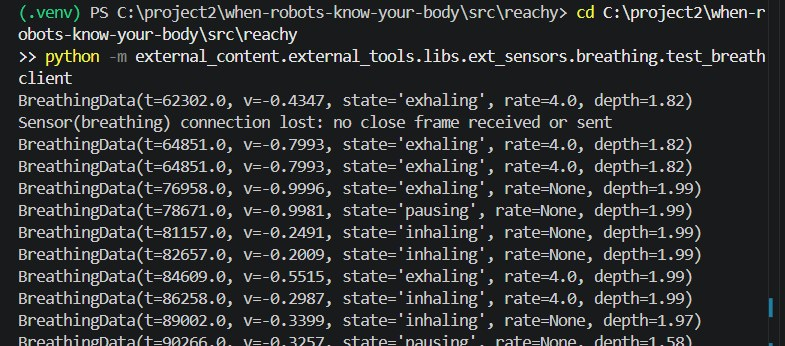

5. De ademtool in de Reachy-app
Reachy moet mijn ademhaling kunnen opvragen als ik vraag “Hoe adem ik nu?”.
di 3 november 2026
Wat ik maakte
BreathingData(t, v, state, rate, depth) enBreathingClientin de mapext_sensors/breathing.breathing_sensor_tool.pygeeft de state, ademhalingen per minuut en diepte terug, of “unavailable” als er nog geen meting is.- De tool staat in het profiel
interpret, zodat het team hem kan gebruiken.
Ik volgde dezelfde opbouw als de pulssensor van Rio, zodat de code voor iedereen er hetzelfde uitziet.
Eerst testen zonder Reachy
Voordat ik de tool aan Reachy koppelde, testte ik de client los met test_breathclient. Je ziet de metingen binnenkomen met state, rate en depth. Eén keer viel de verbinding weg (“connection lost”) en daarna kwamen de metingen weer binnen. De rate is soms nog leeg (None). Ik denk dat dit komt doordat hij eerst genoeg ademhalingen moet tellen, maar dat heb ik niet apart gecontroleerd.

state, rate en depth komen binnen.Probleem. De app bouwde niet. uv sync gaf UnicodeDecodeError: 'utf-8' codec can't decode byte 0xff.
Oplossing. De README.md was als UTF-16 opgeslagen en de bouw leest UTF-8. Ik zette het bestand om naar UTF-8.
Probleem. Het log zei Tool 'breathing_sensor_tool' not found in shared or external tools. Reachy kende de tool dus niet.
Oplossing. Na de bouwfix en na het starten vanuit de map src\reachy stond in het log Loaded external tool: breathing_sensor_tool. Ik weet niet zeker welke van de twee stappen het oploste.
Wat zegt Reachy?
Op di 3 november werkte het uitlezen helemaal. Reachy gaat aan en de app start op de robot zodra ik hem op mijn laptop start, zonder extra stappen. In het log zie ik dat Reachy de tool aanroept.
Als ik Reachy vraag hoe ik adem, zegt hij bijvoorbeeld dat ik erg langzaam en rustig adem. De woorden zijn niet elke keer hetzelfde, want de antwoorden komen van een taalmodel. Direct na het opstarten van de app zegt hij soms hetzelfde, of juist het tegenovergestelde. Hij geeft ook aan dat hij nog niet alle data heeft. Ik moet ongeveer een minuut wachten tot hij genoeg ademdata heeft verzameld.
Dat past bij mijn script, want de analyse gebruikt de laatste ongeveer 30 seconden en heeft een opwarmtijd. Ik testte dit ook op school met mijn eigen ademhaling. Het antwoord klopte steeds en bleef constant.
Wat ik hieruit leer
Lees eerst het log. Het vertelde me elke keer precies wat er mis was.
Bronnen
- Reachy Mini documentatie, Apps. https://huggingface.co/docs/reachy_mini/main/SDK/apps
- Pipeline / Lifecycle (Team9 Documentation).
- Recognizing Physiological and Emotional states with Sensors (Team9 Documentation). https://studio.dev.hihva.nl/dark-tech/projects/2026-2027-semester-1/when-robots-know-your-body/research/physiological-state-research/